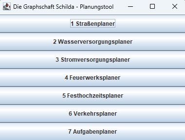

Die Graphschaft Schilda
Abstract
Diese Website ist die Dokumentation des Projektes "Graphschaft Schilda" für das Modul Programmiertechnik III an der TH Aschaffenburg.
Die Graphschaft Schilda ist ein beschauliches Örtchen irgendwo im Nichts. Lange Zeit blieb diese Graphschaft unbehelligt vom Fortschritt, nichts tat sich in dem Örtchen. Eines Tages jedoch machte sich dort plötzlich das Gerücht breit, dass fernab der Graphschaft intelligente Menschen leben, die (fast) alle Probleme der Welt mit mächtigen Algorithmen lösen könnten. Die Bürger der Graphschaft machten sich also auf den Weg um diese intelligenten Menschen mit der Lösung ihrer Probleme zu beauftragen....
Aufgabenstellung
Entwickeln Sie ein Planungstool, dass der Graphschaft Schilda bei der Lösung ihrer Probleme hilft.
- Analysieren Sie jedes der Probleme: Welche Daten sollen verarbeitet werden? Was sind die Eingaben? Was die Ausgaben? Welcher Algorithmus eignet sich? Welche Datenstruktur eignet sich?
- Implementieren Sie den Algorithmus (in Java), so dass bei Eingabe der entsprechenden Daten die gewünschte Ausgabe berechnet und ausgegeben wird.
- Geben Sie für jeden implementierten Algorithmus die Laufzeit an. Da Sie sich nun schon so viel Mühe mit dem Tool geben, wollen Sie das Tool natürlich auch an andere Gemeinden verkaufen. Die Eingaben sollen dafür generisch, d.h., für neue Orte, Feiern und Planungen anpassbar sein. Sie können diese Aufgabe ein 2er oder 3er Teams lösen. Bitte geben Sie dann die Arbeitsteilung im Dokument mit an. Die 15minütige Einzelprüfung wird auf die Projektaufgabe eingehen.
Planungstool Aufbau
Das Interface
Sobald das Programm startet, öffnet sich ein Fenster mit einem Menü für die Auswahl der verschiedenen Probleme. Wenn ein Knopf gedrückt wird, öffnet sich ein neues Fenster mit dem entsprechenden Problem.

Die Aufgaben
Jedes Problem besitzt eine eigene Klasse ProblemX.java, die sich im Ordner code befinden.
Der Ordner code/utils enthält die Klassen:
-
AdjazenzMatrix.java: Speichert eineint[][]Matrix,char[]Buchstaben-Array und ob es sich um einen gerichteten oder ungerichteten Graphen handelt. -
FileHandler.java: Stellt Methoden zum Einlesen und Schreiben von Dateien bereit. Die Laufzeit um eine Datei einzulesen istO(n)mit n = Anzahl der Zeichen in der Datei. Die Laufzeit des Schreibens istO(V^2)mit V = Anzahl der Knoten des Graphen. -
Vertex.java: Speichert einen Buchstaben, einen Vertex-Vorgänger, einen 'key' und eine Option ob der Vertex bereits besucht wurde. -
Edge.java: Speichert zwei Buchstaben für den Start- und Endknoten der Kante und ein Gewicht. -
JGraphPanel.java: Eine Klasse, die einJPanelerweitert und mit Hilfe der mxgraph und jgrapht Bibliotheken einen Graphen zeichnet. -
BasicWindow.java: Eine Klasse, die einJFrameerweitert und als Grundlage für die Fenster der einzelnen Probleme dient.
Die Eingabe
Die Eingabedateien befinden sich in dem Ordner data und folgen dem Namensschema problemX.txt. Die Dateien werden mit der Klasse FileHandler.java eingelesen und in einer Instanz der Klasse AdjazenzMatrix.java gespeichert.
Die Ausgabe
Die Ausgabedateien befinden sich in dem Ordner output und werden automatisch generiert oder überschrieben sobald ein Punkt aus dem Menü ausgewählt wird.
Beim Betätigen eines Menübuttons wird die Ein- und Ausgabe graphisch dargestellt und zusätzlich in der Konsole ausgegeben.
In der Ausgabedatei werden die Graphen in einer Adjazenzmatrix gespeichert, die dem Schema der Eingabedatei entspricht.
Das Team
Auftraggeber
Prof. Barbara Sprick - Professorin für Praktische Informatik bei TH Aschaffenburg